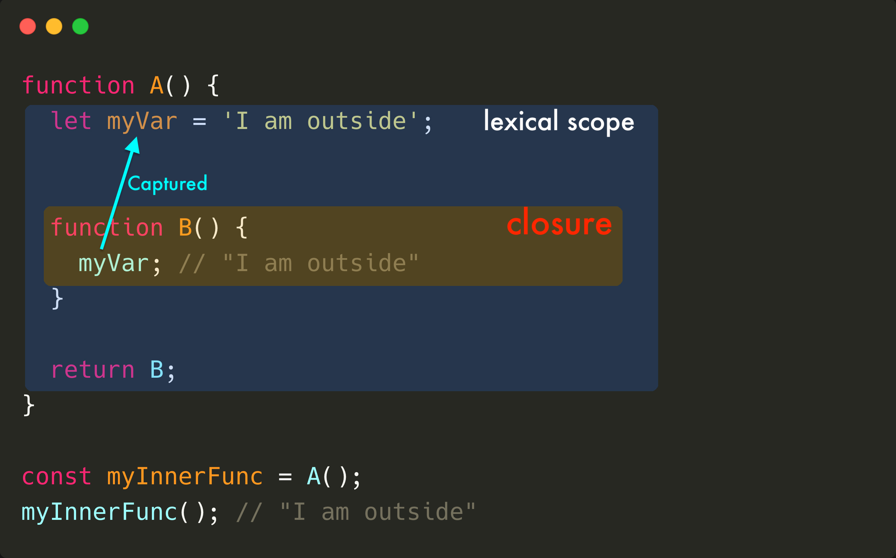

function foo() {
//The function scope
let count = 0;
console.log(count); // logs 0
}
foo();
console.log(count); // ReferenceError: count is not defined
The scope is a space policy that rules the accessibility of variables.
function foo() {
// "foo" function scope
let count = 0;
console.log(count); // logs 0
}
function bar() {
// "bar" function scope
let count = 1;
console.log(count); // logs 1
}
foo();
bar();
A function is called “nested” when it is created inside another function.
function A() {
// the outer scope
let myVar = 'I am outside';
function B() {
// the inner scope
console.log(myVar); // logs "I am outside"
}
B(); //invoke function B
}
A();
- Scopes can be nested
- The variables of the outer scope are accessible inside the inner scope
function A() {
// the outer scope
let myVar = 'I am outside';
function B() {
// the inner scope
console.log(myVar); // logs "I am outside"
}
B(); //invoke function B
}
A();
const myGlobal = 0;
function A() {
const myVar = 1;
console.log(myGlobal); // logs 0
function B() {
const myInnerVar = 2;
console.log(myVar, myGlobal); // logs "1 0"
function C() {
console.log(myInnerVar, myVar, myGlobal); // logs "2 1 0"
}
C();
}
B()
}
A();
function A() {
let myVar = 'I am outside';
function B() {
console.log(myVar); // "I am outside"
}
B();
}
A();
function A() {
let myVar = 'I am outside';
function B() {
console.log(myVar); // "I am outside"
}
return B();
}
const myInnerFunc = A();
myInnerFunc();
myInnerFunc(); // "I am outside"
The closure captures variables from lexical scope

let countClicked = 0;
myButton.addEventListener('click', function handleClick() {
countClicked++;
myText.innerText = `You clicked ${countClicked} times`;
});
const message = 'Hello, World!';
setTimeout(function callback() {
console.log(message); // logs "Hello, World!"
}, 1000);
let countEven = 0;
const items = [1, 5, 100, 10];
items.forEach(function iterator(number) {
if (number % 2 === 0) {
countEven++;
}
});
console.log(countEven);
function multiply(a) {
return function executeMultiply(b) {
return a * b;
}
}
const double = multiply(2);
double(3); // => 6
double(5); // => 10
const triple = multiply(3);
triple(4); // => 12